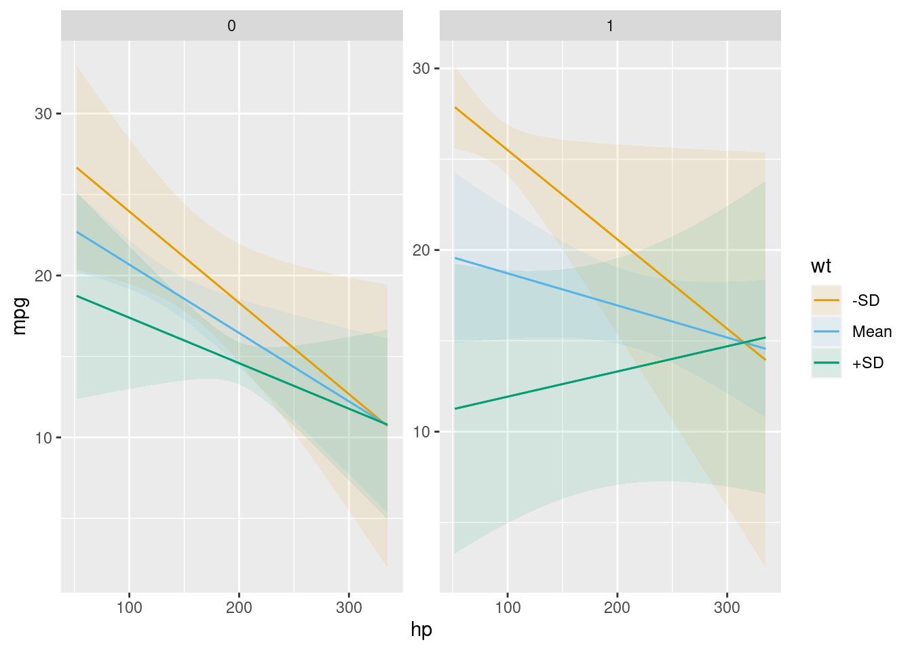
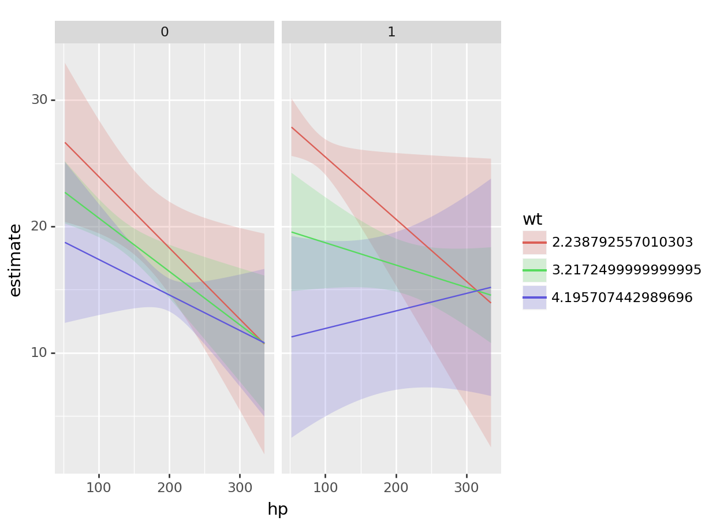

install.packages("marginaleffects")Get Started
This page explains how to interpret statistical results using the marginaleffects package for R and Python. The workflow that we propose rests on 5 conceptual pillars:
- Estimand: What is the quantity of interest? Do we want to estimate a prediction or a function of predictions (average, difference, ratio, derivative, etc.)?
- Grid: What regressor values are we interested in? Do we want to produce estimates for the units in our dataset, or for hypothetical or representative individuals?
- Aggregation: Do we report estimates for every observation in the grid or a global summary?
- Uncertainty: How do we quantify uncertainty about our estimates?
- Test: Which (non-)linear hypothesis or equivalence tests do we conduct?
Installation
Before we begin, let’s install the marginaleffects package:
Install from CRAN:
Install from PyPI:
pip install marginaleffectsEstimands
The marginaleffects package allows R users to compute and plot three principal quantities of interest: (1) predictions, (2) comparisons, and (3) slopes. In addition, the package includes a convenience function to compute a fourth estimand, “marginal means”, which is a special case of averaged predictions. marginaleffects can also average (or “marginalize”) unit-level (or “conditional”) estimates of all those quantities, and conduct hypothesis tests on them.
The outcome predicted by a fitted model on a specified scale for a given combination of values of the predictor variables, such as their observed values, their means, or factor levels. a.k.a. Fitted values, adjusted predictions.
predictions(),avg_predictions(),plot_predictions().
Compare the predictions made by a model for different regressor values (e.g., college graduates vs. others): contrasts, differences, risk ratios, odds, etc.
comparisons(),avg_comparisons(),plot_comparisons().
Partial derivative of the regression equation with respect to a regressor of interest. a.k.a. Marginal effects, trends.
slopes(),avg_slopes(),plot_slopes().
Predictions of a model, averaged across a “reference grid” of categorical predictors.
marginalmeans().
Hypothesis and Equivalence Tests:
Hypothesis and equivalence tests can be conducted on linear or non-linear functions of model coefficients, or on any of the quantities computed by the
marginaleffectspackages (predictions, slopes, comparisons, marginal means, etc.). Uncertainy estimates can be obtained via the delta method (with or without robust standard errors), bootstrap, or simulation.
Predictions, comparisons, and slopes are fundamentally unit-level (or “conditional”) quantities. Except in the simplest linear case, estimates will typically vary based on the values of all the regressors in a model. Each of the observations in a dataset is thus associated with its own prediction, comparison, and slope estimates. Below, we will see that it can be useful to marginalize (or “average over”) unit-level estimates to report an “average prediction”, “average comparison”, or “average slope”.
One ambiguous aspect of the definitions above is that the word “marginal” comes up in two different and opposite ways:
- In “marginal effects,” we refer to the effect of a tiny (marginal) change in the regressor on the outcome. This is a slope, or derivative.
- In “marginal means,” we refer to the process of marginalizing across rows of a prediction grid. This is an average, or integral.
On this website and in this package, we reserve the expression “marginal effect” to mean a “slope” or “partial derivative”.
The marginaleffects package includes functions to estimate, average, plot, and summarize all of the estimands described above. The objects produced by marginaleffects are “tidy”: they produce simple data frames in “long” format. They are also “standards-compliant” and work seamlessly with standard functions like summary(), head(), tidy(), and glance(), as well with external packages like modelsummary or ggplot2.
We now apply marginaleffects functions to compute each of the estimands described above. First, we fit a linear regression model with multiplicative interactions:
library(marginaleffects)
mod <- lm(mpg ~ hp * wt * am, data = mtcars)import polars as pl
import numpy as np
import statsmodels.formula.api as smf
from marginaleffects import *
mtcars = pl.read_csv("https://vincentarelbundock.github.io/Rdatasets/csv/datasets/mtcars.csv")
mod = smf.ols("mpg ~ hp * wt * am", data = mtcars).fit()Then, we call the predictions() function. As noted above, predictions are unit-level estimates, so there is one specific prediction per observation. By default, the predictions() function makes one prediction per observation in the dataset that was used to fit the original model. Since mtcars has 32 rows, the predictions() outcome also has 32 rows:
pre <- predictions(mod)
nrow(mtcars)[1] 32nrow(pre)[1] 32pre
Estimate Std. Error z Pr(>|z|) S 2.5 % 97.5 %
22.5 0.884 25.44 <0.001 471.7 20.8 24.2
20.8 1.194 17.42 <0.001 223.3 18.5 23.1
25.3 0.709 35.66 <0.001 922.7 23.9 26.7
20.3 0.704 28.75 <0.001 601.5 18.9 21.6
17.0 0.712 23.88 <0.001 416.2 15.6 18.4
--- 22 rows omitted. See ?avg_predictions and ?print.marginaleffects ---
29.6 1.874 15.80 <0.001 184.3 25.9 33.3
15.9 1.311 12.13 <0.001 110.0 13.3 18.5
19.4 1.145 16.95 <0.001 211.6 17.2 21.7
14.8 2.017 7.33 <0.001 42.0 10.8 18.7
21.5 1.072 20.02 <0.001 293.8 19.4 23.6
Columns: rowid, estimate, std.error, statistic, p.value, s.value, conf.low, conf.high, mpg, hp, wt, am
Type: response pre = predictions(mod)
mtcars.shape(32, 12)pre.shape(32, 20)print(pre)shape: (32, 7)
┌──────────┬───────────┬──────┬──────────┬──────┬──────┬───────┐
│ Estimate ┆ Std.Error ┆ z ┆ P(>|z|) ┆ S ┆ 2.5% ┆ 97.5% │
│ --- ┆ --- ┆ --- ┆ --- ┆ --- ┆ --- ┆ --- │
│ str ┆ str ┆ str ┆ str ┆ str ┆ str ┆ str │
╞══════════╪═══════════╪══════╪══════════╪══════╪══════╪═══════╡
│ 22.5 ┆ 0.884 ┆ 25.4 ┆ 0 ┆ inf ┆ 20.7 ┆ 24.3 │
│ 20.8 ┆ 1.19 ┆ 17.4 ┆ 4e-15 ┆ 47.8 ┆ 18.3 ┆ 23.3 │
│ 25.3 ┆ 0.709 ┆ 35.7 ┆ 0 ┆ inf ┆ 23.8 ┆ 26.7 │
│ 20.3 ┆ 0.704 ┆ 28.8 ┆ 0 ┆ inf ┆ 18.8 ┆ 21.7 │
│ … ┆ … ┆ … ┆ … ┆ … ┆ … ┆ … │
│ 15.9 ┆ 1.31 ┆ 12.1 ┆ 1e-11 ┆ 36.5 ┆ 13.2 ┆ 18.6 │
│ 19.4 ┆ 1.15 ┆ 16.9 ┆ 7.33e-15 ┆ 47 ┆ 17 ┆ 21.8 │
│ 14.8 ┆ 2.02 ┆ 7.33 ┆ 1.43e-07 ┆ 22.7 ┆ 10.6 ┆ 19 │
│ 21.5 ┆ 1.07 ┆ 20 ┆ 2.22e-16 ┆ 52 ┆ 19.2 ┆ 23.7 │
└──────────┴───────────┴──────┴──────────┴──────┴──────┴───────┘
Columns: rowid, estimate, std_error, statistic, p_value, s_value, conf_low, conf_high, rownames, mpg, cyl, disp, hp, drat, wt, qsec, vs, am, gear, carbNow, we use the comparisons() function to compute the difference in predicted outcome when each of the predictors is incremented by 1 unit (one predictor at a time, holding all others constant). Once again, comparisons are unit-level quantities. And since there are 3 predictors in the model and our data has 32 rows, we obtain 96 comparisons:
cmp <- comparisons(mod)
nrow(cmp)[1] 96cmp
Term Contrast Estimate Std. Error z Pr(>|z|) S 2.5 % 97.5 %
am 1 - 0 0.325 1.68 0.193 0.8467 0.2 -2.97 3.622
am 1 - 0 -0.544 1.57 -0.347 0.7287 0.5 -3.62 2.530
am 1 - 0 1.201 2.35 0.511 0.6090 0.7 -3.40 5.802
am 1 - 0 -1.703 1.87 -0.912 0.3618 1.5 -5.36 1.957
am 1 - 0 -0.615 1.68 -0.366 0.7146 0.5 -3.91 2.680
--- 86 rows omitted. See ?avg_comparisons and ?print.marginaleffects ---
wt +1 -6.518 1.88 -3.462 <0.001 10.9 -10.21 -2.828
wt +1 -1.653 3.74 -0.442 0.6588 0.6 -8.99 5.683
wt +1 -4.520 2.47 -1.830 0.0672 3.9 -9.36 0.321
wt +1 0.635 4.89 0.130 0.8966 0.2 -8.95 10.216
wt +1 -6.647 1.86 -3.572 <0.001 11.5 -10.29 -2.999
Columns: rowid, term, contrast, estimate, std.error, statistic, p.value, s.value, conf.low, conf.high, predicted_lo, predicted_hi, predicted, mpg, hp, wt, am
Type: response cmp = comparisons(mod)
cmp.shape(96, 25)print(cmp)shape: (96, 9)
┌──────┬──────────┬──────────┬───────────┬───┬─────────┬───────┬─────────┬─────────┐
│ Term ┆ Contrast ┆ Estimate ┆ Std.Error ┆ … ┆ P(>|z|) ┆ S ┆ 2.5% ┆ 97.5% │
│ --- ┆ --- ┆ --- ┆ --- ┆ ┆ --- ┆ --- ┆ --- ┆ --- │
│ str ┆ str ┆ str ┆ str ┆ ┆ str ┆ str ┆ str ┆ str │
╞══════╪══════════╪══════════╪═══════════╪═══╪═════════╪═══════╪═════════╪═════════╡
│ hp ┆ +1 ┆ -0.0369 ┆ 0.0185 ┆ … ┆ 0.0576 ┆ 4.12 ┆ -0.0751 ┆ 0.00128 │
│ hp ┆ +1 ┆ -0.0287 ┆ 0.0156 ┆ … ┆ 0.0788 ┆ 3.67 ┆ -0.0609 ┆ 0.00357 │
│ hp ┆ +1 ┆ -0.0466 ┆ 0.0226 ┆ … ┆ 0.0502 ┆ 4.32 ┆ -0.0932 ┆ 4.6e-05 │
│ hp ┆ +1 ┆ -0.0423 ┆ 0.0133 ┆ … ┆ 0.00401 ┆ 7.96 ┆ -0.0697 ┆ -0.0149 │
│ … ┆ … ┆ … ┆ … ┆ … ┆ … ┆ … ┆ … ┆ … │
│ am ┆ 1 - 0 ┆ 2.11 ┆ 2.29 ┆ … ┆ 0.367 ┆ 1.45 ┆ -2.62 ┆ 6.83 │
│ am ┆ 1 - 0 ┆ 0.895 ┆ 1.64 ┆ … ┆ 0.591 ┆ 0.758 ┆ -2.5 ┆ 4.29 │
│ am ┆ 1 - 0 ┆ 4.03 ┆ 3.24 ┆ … ┆ 0.226 ┆ 2.15 ┆ -2.66 ┆ 10.7 │
│ am ┆ 1 - 0 ┆ -0.237 ┆ 1.59 ┆ … ┆ 0.883 ┆ 0.18 ┆ -3.51 ┆ 3.04 │
└──────┴──────────┴──────────┴───────────┴───┴─────────┴───────┴─────────┴─────────┘
Columns: rowid, term, contrast, estimate, std_error, statistic, p_value, s_value, conf_low, conf_high, predicted, predicted_lo, predicted_hi, rownames, mpg, cyl, disp, hp, drat, wt, qsec, vs, am, gear, carbThe comparisons() function allows customized queries. For example, what happens to the predicted outcome when the hp variable increases from 100 to 120?
comparisons(mod, variables = list(hp = c(120, 100)))
Term Contrast Estimate Std. Error z Pr(>|z|) S 2.5 % 97.5 %
hp 120 - 100 -0.738 0.370 -1.995 0.04607 4.4 -1.463 -0.0129
hp 120 - 100 -0.574 0.313 -1.836 0.06640 3.9 -1.186 0.0388
hp 120 - 100 -0.931 0.452 -2.062 0.03922 4.7 -1.817 -0.0460
hp 120 - 100 -0.845 0.266 -3.182 0.00146 9.4 -1.366 -0.3248
hp 120 - 100 -0.780 0.268 -2.909 0.00362 8.1 -1.306 -0.2547
--- 22 rows omitted. See ?avg_comparisons and ?print.marginaleffects ---
hp 120 - 100 -1.451 0.705 -2.058 0.03958 4.7 -2.834 -0.0692
hp 120 - 100 -0.384 0.270 -1.422 0.15498 2.7 -0.912 0.1451
hp 120 - 100 -0.641 0.334 -1.918 0.05513 4.2 -1.297 0.0141
hp 120 - 100 -0.126 0.272 -0.463 0.64360 0.6 -0.659 0.4075
hp 120 - 100 -0.635 0.332 -1.911 0.05598 4.2 -1.286 0.0162
Columns: rowid, term, contrast, estimate, std.error, statistic, p.value, s.value, conf.low, conf.high, predicted_lo, predicted_hi, predicted, mpg, hp, wt, am
Type: response cmp = comparisons(mod, variables = {"hp": [120, 100]})
print(cmp)shape: (32, 9)
┌──────┬───────────┬──────────┬───────────┬───┬─────────┬───────┬───────────┬───────┐
│ Term ┆ Contrast ┆ Estimate ┆ Std.Error ┆ … ┆ P(>|z|) ┆ S ┆ 2.5% ┆ 97.5% │
│ --- ┆ --- ┆ --- ┆ --- ┆ ┆ --- ┆ --- ┆ --- ┆ --- │
│ str ┆ str ┆ str ┆ str ┆ ┆ str ┆ str ┆ str ┆ str │
╞══════╪═══════════╪══════════╪═══════════╪═══╪═════════╪═══════╪═══════════╪═══════╡
│ hp ┆ 100 - 120 ┆ 0.738 ┆ 0.37 ┆ … ┆ 0.0576 ┆ 4.12 ┆ -0.0256 ┆ 1.5 │
│ hp ┆ 100 - 120 ┆ 0.574 ┆ 0.313 ┆ … ┆ 0.0788 ┆ 3.67 ┆ -0.0713 ┆ 1.22 │
│ hp ┆ 100 - 120 ┆ 0.931 ┆ 0.452 ┆ … ┆ 0.0502 ┆ 4.32 ┆ -0.000919 ┆ 1.86 │
│ hp ┆ 100 - 120 ┆ 0.845 ┆ 0.266 ┆ … ┆ 0.00401 ┆ 7.96 ┆ 0.297 ┆ 1.39 │
│ … ┆ … ┆ … ┆ … ┆ … ┆ … ┆ … ┆ … ┆ … │
│ hp ┆ 100 - 120 ┆ 0.384 ┆ 0.27 ┆ … ┆ 0.168 ┆ 2.57 ┆ -0.173 ┆ 0.941 │
│ hp ┆ 100 - 120 ┆ 0.641 ┆ 0.334 ┆ … ┆ 0.0671 ┆ 3.9 ┆ -0.0488 ┆ 1.33 │
│ hp ┆ 100 - 120 ┆ 0.126 ┆ 0.272 ┆ … ┆ 0.648 ┆ 0.626 ┆ -0.436 ┆ 0.688 │
│ hp ┆ 100 - 120 ┆ 0.635 ┆ 0.332 ┆ … ┆ 0.068 ┆ 3.88 ┆ -0.0507 ┆ 1.32 │
└──────┴───────────┴──────────┴───────────┴───┴─────────┴───────┴───────────┴───────┘
Columns: rowid, term, contrast, estimate, std_error, statistic, p_value, s_value, conf_low, conf_high, predicted, predicted_lo, predicted_hi, rownames, mpg, cyl, disp, hp, drat, wt, qsec, vs, am, gear, carbWhat happens to the predicted outcome when the wt variable increases by 1 standard deviation about its mean?
comparisons(mod, variables = list(hp = "sd"))
Term Contrast Estimate Std. Error z Pr(>|z|) S 2.5 % 97.5 %
hp (x + sd/2) - (x - sd/2) -2.530 1.269 -1.995 0.04607 4.4 -5.02 -0.0441
hp (x + sd/2) - (x - sd/2) -1.967 1.072 -1.836 0.06640 3.9 -4.07 0.1332
hp (x + sd/2) - (x - sd/2) -3.193 1.549 -2.062 0.03922 4.7 -6.23 -0.1578
hp (x + sd/2) - (x - sd/2) -2.898 0.911 -3.182 0.00146 9.4 -4.68 -1.1133
hp (x + sd/2) - (x - sd/2) -2.675 0.919 -2.909 0.00362 8.1 -4.48 -0.8731
--- 22 rows omitted. See ?avg_comparisons and ?print.marginaleffects ---
hp (x + sd/2) - (x - sd/2) -4.976 2.418 -2.058 0.03958 4.7 -9.71 -0.2373
hp (x + sd/2) - (x - sd/2) -1.315 0.925 -1.422 0.15498 2.7 -3.13 0.4974
hp (x + sd/2) - (x - sd/2) -2.199 1.147 -1.918 0.05513 4.2 -4.45 0.0483
hp (x + sd/2) - (x - sd/2) -0.432 0.933 -0.463 0.64360 0.6 -2.26 1.3970
hp (x + sd/2) - (x - sd/2) -2.177 1.139 -1.911 0.05598 4.2 -4.41 0.0556
Columns: rowid, term, contrast, estimate, std.error, statistic, p.value, s.value, conf.low, conf.high, predicted_lo, predicted_hi, predicted, mpg, hp, wt, am
Type: response cmp = comparisons(mod, variables = {"hp": "sd"})
print(cmp)shape: (32, 9)
┌──────┬────────────────────┬──────────┬───────────┬───┬─────────┬───────┬───────┬─────────┐
│ Term ┆ Contrast ┆ Estimate ┆ Std.Error ┆ … ┆ P(>|z|) ┆ S ┆ 2.5% ┆ 97.5% │
│ --- ┆ --- ┆ --- ┆ --- ┆ ┆ --- ┆ --- ┆ --- ┆ --- │
│ str ┆ str ┆ str ┆ str ┆ ┆ str ┆ str ┆ str ┆ str │
╞══════╪════════════════════╪══════════╪═══════════╪═══╪═════════╪═══════╪═══════╪═════════╡
│ hp ┆ +68.56286848932059 ┆ -2.53 ┆ 1.27 ┆ … ┆ 0.0576 ┆ 4.12 ┆ -5.15 ┆ 0.0878 │
│ hp ┆ +68.56286848932059 ┆ -1.97 ┆ 1.07 ┆ … ┆ 0.0788 ┆ 3.67 ┆ -4.18 ┆ 0.245 │
│ hp ┆ +68.56286848932059 ┆ -3.19 ┆ 1.55 ┆ … ┆ 0.0502 ┆ 4.32 ┆ -6.39 ┆ 0.00315 │
│ hp ┆ +68.56286848932059 ┆ -2.9 ┆ 0.911 ┆ … ┆ 0.00401 ┆ 7.96 ┆ -4.78 ┆ -1.02 │
│ … ┆ … ┆ … ┆ … ┆ … ┆ … ┆ … ┆ … ┆ … │
│ hp ┆ +68.56286848932059 ┆ -1.32 ┆ 0.925 ┆ … ┆ 0.168 ┆ 2.57 ┆ -3.22 ┆ 0.594 │
│ hp ┆ +68.56286848932059 ┆ -2.2 ┆ 1.15 ┆ … ┆ 0.0671 ┆ 3.9 ┆ -4.57 ┆ 0.167 │
│ hp ┆ +68.56286848932059 ┆ -0.432 ┆ 0.933 ┆ … ┆ 0.648 ┆ 0.626 ┆ -2.36 ┆ 1.49 │
│ hp ┆ +68.56286848932059 ┆ -2.18 ┆ 1.14 ┆ … ┆ 0.068 ┆ 3.88 ┆ -4.53 ┆ 0.174 │
└──────┴────────────────────┴──────────┴───────────┴───┴─────────┴───────┴───────┴─────────┘
Columns: rowid, term, contrast, estimate, std_error, statistic, p_value, s_value, conf_low, conf_high, predicted, predicted_lo, predicted_hi, rownames, mpg, cyl, disp, hp, drat, wt, qsec, vs, am, gear, carbThe comparisons() function also allows users to specify arbitrary functions of predictions, with the comparison argument. For example, what is the average ratio between predicted Miles per Gallon after an increase of 50 units in Horsepower?
comparisons(
mod,
variables = list(hp = 50),
comparison = "ratioavg")
Term Contrast Estimate Std. Error z Pr(>|z|) S 2.5 % 97.5 %
hp mean(+50) 0.905 0.0319 28.4 <0.001 586.8 0.843 0.968
Columns: term, contrast, estimate, std.error, statistic, p.value, s.value, conf.low, conf.high, predicted_lo, predicted_hi, predicted
Type: response cmp = comparisons(
mod,
variables = {"hp": 50},
comparison = "ratioavg")
print(cmp)shape: (1, 9)
┌──────┬──────────┬──────────┬───────────┬───┬─────────┬─────┬──────┬───────┐
│ Term ┆ Contrast ┆ Estimate ┆ Std.Error ┆ … ┆ P(>|z|) ┆ S ┆ 2.5% ┆ 97.5% │
│ --- ┆ --- ┆ --- ┆ --- ┆ ┆ --- ┆ --- ┆ --- ┆ --- │
│ str ┆ str ┆ str ┆ str ┆ ┆ str ┆ str ┆ str ┆ str │
╞══════╪══════════╪══════════╪═══════════╪═══╪═════════╪═════╪══════╪═══════╡
│ hp ┆ +50 ┆ 0.91 ┆ 0.0291 ┆ … ┆ 0 ┆ inf ┆ 0.85 ┆ 0.97 │
└──────┴──────────┴──────────┴───────────┴───┴─────────┴─────┴──────┴───────┘
Columns: term, contrast, estimate, std_error, statistic, p_value, s_value, conf_low, conf_highSee the Comparisons vignette for detailed explanations and more options.
The slopes() function allows us to compute the partial derivative of the outcome equation with respect to each of the predictors. Once again, we obtain a data frame with 96 rows:
mfx <- slopes(mod)
nrow(mfx)[1] 96mfx
Term Contrast Estimate Std. Error z Pr(>|z|) S 2.5 % 97.5 %
am 1 - 0 0.325 1.68 0.193 0.8467 0.2 -2.97 3.622
am 1 - 0 -0.544 1.57 -0.347 0.7287 0.5 -3.62 2.530
am 1 - 0 1.201 2.35 0.511 0.6090 0.7 -3.40 5.802
am 1 - 0 -1.703 1.87 -0.912 0.3618 1.5 -5.36 1.957
am 1 - 0 -0.615 1.68 -0.366 0.7146 0.5 -3.91 2.680
--- 86 rows omitted. See ?avg_slopes and ?print.marginaleffects ---
wt dY/dX -6.518 1.88 -3.462 <0.001 10.9 -10.21 -2.828
wt dY/dX -1.653 3.74 -0.442 0.6588 0.6 -8.99 5.682
wt dY/dX -4.520 2.47 -1.829 0.0673 3.9 -9.36 0.322
wt dY/dX 0.635 4.89 0.130 0.8966 0.2 -8.95 10.216
wt dY/dX -6.647 1.86 -3.572 <0.001 11.5 -10.29 -3.000
Columns: rowid, term, contrast, estimate, std.error, statistic, p.value, s.value, conf.low, conf.high, predicted_lo, predicted_hi, predicted, mpg, hp, wt, am
Type: response mfx = slopes(mod)
mfx.shape(96, 25)print(mfx)shape: (96, 9)
┌──────┬──────────┬───────────┬───────────┬───┬─────────┬───────┬───────────┬──────────┐
│ Term ┆ Contrast ┆ Estimate ┆ Std.Error ┆ … ┆ P(>|z|) ┆ S ┆ 2.5% ┆ 97.5% │
│ --- ┆ --- ┆ --- ┆ --- ┆ ┆ --- ┆ --- ┆ --- ┆ --- │
│ str ┆ str ┆ str ┆ str ┆ ┆ str ┆ str ┆ str ┆ str │
╞══════╪══════════╪═══════════╪═══════════╪═══╪═════════╪═══════╪═══════════╪══════════╡
│ hp ┆ dY/dX ┆ -0.0369 ┆ 0.019 ┆ … ┆ 0.0639 ┆ 3.97 ┆ -0.0761 ┆ 0.00231 │
│ hp ┆ dY/dX ┆ -0.0287 ┆ 0.018 ┆ … ┆ 0.124 ┆ 3.01 ┆ -0.0659 ┆ 0.00851 │
│ hp ┆ dY/dX ┆ -0.0466 ┆ 0.0208 ┆ … ┆ 0.0343 ┆ 4.86 ┆ -0.0894 ┆ -0.00374 │
│ hp ┆ dY/dX ┆ -0.0423 ┆ 0.0134 ┆ … ┆ 0.00432 ┆ 7.86 ┆ -0.07 ┆ -0.0146 │
│ … ┆ … ┆ … ┆ … ┆ … ┆ … ┆ … ┆ … ┆ … │
│ am ┆ dY/dX ┆ 2.11e+04 ┆ 2.29e+04 ┆ … ┆ 0.367 ┆ 1.45 ┆ -2.62e+04 ┆ 6.83e+04 │
│ am ┆ dY/dX ┆ 8.95e+03 ┆ 1.64e+04 ┆ … ┆ 0.591 ┆ 0.758 ┆ -2.5e+04 ┆ 4.29e+04 │
│ am ┆ dY/dX ┆ 4.03e+04 ┆ 3.24e+04 ┆ … ┆ 0.226 ┆ 2.15 ┆ -2.66e+04 ┆ 1.07e+05 │
│ am ┆ dY/dX ┆ -2.37e+03 ┆ 1.59e+04 ┆ … ┆ 0.883 ┆ 0.18 ┆ -3.51e+04 ┆ 3.04e+04 │
└──────┴──────────┴───────────┴───────────┴───┴─────────┴───────┴───────────┴──────────┘
Columns: rowid, term, contrast, estimate, std_error, statistic, p_value, s_value, conf_low, conf_high, predicted, predicted_lo, predicted_hi, rownames, mpg, cyl, disp, hp, drat, wt, qsec, vs, am, gear, carbGrid
Predictions, comparisons, and slopes are typically “conditional” quantities which depend on the values of all the predictors in the model. By default, marginaleffects functions estimate quantities of interest for the empirical distribution of the data (i.e., for each row of the original dataset). However, users can specify the exact values of the predictors they want to investigate by using the newdata argument.
newdata accepts data frames, shortcut strings, or a call to the datagrid() function. For example, to compute the predicted outcome for a hypothetical car with all predictors equal to the sample mean or median, we can do:
predictions(mod, newdata = "mean")
Estimate Std. Error z Pr(>|z|) S 2.5 % 97.5 % hp wt am
18.4 0.68 27 <0.001 531.7 17 19.7 147 3.22 0.406
Columns: rowid, estimate, std.error, statistic, p.value, s.value, conf.low, conf.high, mpg, hp, wt, am
Type: response predictions(mod, newdata = "median")
Estimate Std. Error z Pr(>|z|) S 2.5 % 97.5 % hp wt am
19.4 0.646 30 <0.001 653.2 18.1 20.6 123 3.33 0
Columns: rowid, estimate, std.error, statistic, p.value, s.value, conf.low, conf.high, mpg, hp, wt, am
Type: response p = predictions(mod, newdata = "mean")
print(p)shape: (1, 7)
┌──────────┬───────────┬─────┬─────────┬─────┬──────┬───────┐
│ Estimate ┆ Std.Error ┆ z ┆ P(>|z|) ┆ S ┆ 2.5% ┆ 97.5% │
│ --- ┆ --- ┆ --- ┆ --- ┆ --- ┆ --- ┆ --- │
│ str ┆ str ┆ str ┆ str ┆ str ┆ str ┆ str │
╞══════════╪═══════════╪═════╪═════════╪═════╪══════╪═══════╡
│ 18.4 ┆ 0.68 ┆ 27 ┆ 0 ┆ inf ┆ 17 ┆ 19.8 │
└──────────┴───────────┴─────┴─────────┴─────┴──────┴───────┘
Columns: rowid, estimate, std_error, statistic, p_value, s_value, conf_low, conf_high, rownames, mpg, cyl, disp, hp, drat, wt, qsec, vs, am, gear, carbp = predictions(mod, newdata = "median")
print(p)shape: (1, 7)
┌──────────┬───────────┬─────┬─────────┬─────┬──────┬───────┐
│ Estimate ┆ Std.Error ┆ z ┆ P(>|z|) ┆ S ┆ 2.5% ┆ 97.5% │
│ --- ┆ --- ┆ --- ┆ --- ┆ --- ┆ --- ┆ --- │
│ str ┆ str ┆ str ┆ str ┆ str ┆ str ┆ str │
╞══════════╪═══════════╪═════╪═════════╪═════╪══════╪═══════╡
│ 19.4 ┆ 0.646 ┆ 30 ┆ 0 ┆ inf ┆ 18 ┆ 20.7 │
└──────────┴───────────┴─────┴─────────┴─────┴──────┴───────┘
Columns: rowid, estimate, std_error, statistic, p_value, s_value, conf_low, conf_high, rownames, mpg, cyl, disp, hp, drat, wt, qsec, vs, am, gear, carbThe datagrid function gives us a powerful way to define a grid of predictors. All the variables not mentioned explicitly in datagrid() are fixed to their mean or mode:
predictions(
mod,
newdata = datagrid(
am = c(0, 1),
wt = range))
am wt Estimate Std. Error z Pr(>|z|) S 2.5 % 97.5 % hp
0 1.51 23.3 2.71 8.60 <0.001 56.7 17.96 28.6 147
0 5.42 12.8 2.98 4.30 <0.001 15.8 6.96 18.6 147
1 1.51 27.1 2.85 9.52 <0.001 69.0 21.56 32.7 147
1 5.42 5.9 5.81 1.01 0.31 1.7 -5.50 17.3 147
Columns: rowid, estimate, std.error, statistic, p.value, s.value, conf.low, conf.high, mpg, hp, am, wt
Type: response p = predictions(
mod,
newdata = datagrid(
mod,
am = [0, 1],
wt = [mtcars["wt"].min(), mtcars["wt"].max()]))
print(p)shape: (4, 7)
┌──────────┬───────────┬──────┬──────────┬──────┬──────┬───────┐
│ Estimate ┆ Std.Error ┆ z ┆ P(>|z|) ┆ S ┆ 2.5% ┆ 97.5% │
│ --- ┆ --- ┆ --- ┆ --- ┆ --- ┆ --- ┆ --- │
│ str ┆ str ┆ str ┆ str ┆ str ┆ str ┆ str │
╞══════════╪═══════════╪══════╪══════════╪══════╪══════╪═══════╡
│ 23.3 ┆ 2.71 ┆ 8.6 ┆ 8.65e-09 ┆ 26.8 ┆ 17.7 ┆ 28.8 │
│ 12.8 ┆ 2.98 ┆ 4.3 ┆ 0.000249 ┆ 12 ┆ 6.65 ┆ 18.9 │
│ 27.1 ┆ 2.85 ┆ 9.52 ┆ 1.27e-09 ┆ 29.5 ┆ 21.3 ┆ 33 │
│ 5.9 ┆ 5.81 ┆ 1.01 ┆ 0.32 ┆ 1.64 ┆ -6.1 ┆ 17.9 │
└──────────┴───────────┴──────┴──────────┴──────┴──────┴───────┘
Columns: rowid, estimate, std_error, statistic, p_value, s_value, conf_low, conf_high, am, wt, rownames, mpg, cyl, disp, hp, drat, qsec, vs, gear, carbThe same mechanism is available in comparisons() and slopes(). To estimate the partial derivative of mpg with respect to wt, when am is equal to 0 and 1, while other predictors are held at their means:
slopes(
mod,
variables = "wt",
newdata = datagrid(am = 0:1))
Term am Estimate Std. Error z Pr(>|z|) S 2.5 % 97.5 %
wt 0 -2.68 1.42 -1.89 0.0593 4.1 -5.46 0.105
wt 1 -5.43 2.15 -2.52 0.0116 6.4 -9.65 -1.214
Columns: rowid, term, estimate, std.error, statistic, p.value, s.value, conf.low, conf.high, am, predicted_lo, predicted_hi, predicted, mpg, hp, wt
Type: response s = slopes(
mod,
variables = "wt",
newdata = datagrid(mod, am = [0, 1]))
print(s)shape: (2, 9)
┌──────┬──────────┬──────────┬───────────┬───┬─────────┬──────┬───────┬────────┐
│ Term ┆ Contrast ┆ Estimate ┆ Std.Error ┆ … ┆ P(>|z|) ┆ S ┆ 2.5% ┆ 97.5% │
│ --- ┆ --- ┆ --- ┆ --- ┆ ┆ --- ┆ --- ┆ --- ┆ --- │
│ str ┆ str ┆ str ┆ str ┆ ┆ str ┆ str ┆ str ┆ str │
╞══════╪══════════╪══════════╪═══════════╪═══╪═════════╪══════╪═══════╪════════╡
│ wt ┆ dY/dX ┆ -2.68 ┆ 1.42 ┆ … ┆ 0.072 ┆ 3.8 ┆ -5.61 ┆ 0.258 │
│ wt ┆ dY/dX ┆ -5.43 ┆ 2.15 ┆ … ┆ 0.0187 ┆ 5.74 ┆ -9.88 ┆ -0.986 │
└──────┴──────────┴──────────┴───────────┴───┴─────────┴──────┴───────┴────────┘
Columns: rowid, term, contrast, estimate, std_error, statistic, p_value, s_value, conf_low, conf_high, predicted, predicted_lo, predicted_hi, am, rownames, mpg, cyl, disp, hp, drat, wt, qsec, vs, gear, carbWe can also plot how predictions, comparisons, or slopes change across different values of the predictors using three powerful plotting functions:
plot_predictions: Conditional Adjusted Predictionsplot_comparisons: Conditional Comparisonsplot_slopes: Conditional Marginal Effects
For example, this plot shows the outcomes predicted by our model for different values of the wt and am variables:
plot_predictions(mod, condition = list("hp", "wt" = "threenum", "am"))
This plot shows how the derivative of mpg with respect to am varies as a function of wt and hp:
plot_slopes(mod, variables = "am", condition = list("hp", "wt" = "minmax"))
See this vignette for more information: Plots, interactions, predictions, contrasts, and slopes
Aggregation
Since predictions, comparisons, and slopes are conditional quantities, they can be a bit unwieldy. Often, it can be useful to report a one-number summary instead of one estimate per observation. Instead of presenting “conditional” estimates, some methodologists recommend reporting “marginal” estimates, that is, an average of unit-level estimates.
(This use of the word “marginal” as “averaging” should not be confused with the term “marginal effect” which, in the econometrics tradition, corresponds to a partial derivative, or the effect of a “small/marginal” change.)
To marginalize (average over) our unit-level estimates, we can use the by argument or the one of the convenience functions: avg_predictions(), avg_comparisons(), or avg_slopes(). For example, both of these commands give us the same result: the average predicted outcome in the mtcars dataset:
avg_predictions(mod)
Estimate Std. Error z Pr(>|z|) S 2.5 % 97.5 %
20.1 0.39 51.5 <0.001 Inf 19.3 20.9
Columns: estimate, std.error, statistic, p.value, s.value, conf.low, conf.high
Type: response p = avg_predictions(mod)
print(p)shape: (1, 7)
┌──────────┬───────────┬──────┬─────────┬─────┬──────┬───────┐
│ Estimate ┆ Std.Error ┆ z ┆ P(>|z|) ┆ S ┆ 2.5% ┆ 97.5% │
│ --- ┆ --- ┆ --- ┆ --- ┆ --- ┆ --- ┆ --- │
│ str ┆ str ┆ str ┆ str ┆ str ┆ str ┆ str │
╞══════════╪═══════════╪══════╪═════════╪═════╪══════╪═══════╡
│ 20.1 ┆ 0.39 ┆ 51.5 ┆ 0 ┆ inf ┆ 19.3 ┆ 20.9 │
└──────────┴───────────┴──────┴─────────┴─────┴──────┴───────┘
Columns: estimate, std_error, statistic, p_value, s_value, conf_low, conf_highThis is equivalent to manual computation by:
mean(predict(mod))[1] 20.09062np.mean(mod.predict())20.090625000000014The main marginaleffects functions all include a by argument, which allows us to marginalize within sub-groups of the data. For example,
avg_comparisons(mod, by = "am")
Term Contrast am Estimate Std. Error z Pr(>|z|) S 2.5 % 97.5 %
am mean(1) - mean(0) 0 -1.3830 2.5250 -0.548 0.58388 0.8 -6.3319 3.56589
am mean(1) - mean(0) 1 1.9029 2.3086 0.824 0.40980 1.3 -2.6219 6.42773
hp mean(+1) 0 -0.0343 0.0159 -2.160 0.03079 5.0 -0.0654 -0.00317
hp mean(+1) 1 -0.0436 0.0213 -2.050 0.04039 4.6 -0.0854 -0.00191
wt mean(+1) 0 -2.4799 1.2316 -2.014 0.04406 4.5 -4.8939 -0.06595
wt mean(+1) 1 -6.0718 1.9762 -3.072 0.00212 8.9 -9.9451 -2.19846
Columns: term, contrast, am, estimate, std.error, statistic, p.value, s.value, conf.low, conf.high, predicted_lo, predicted_hi, predicted
Type: response cmp = avg_comparisons(mod, by = "am")
print(cmp)shape: (6, 10)
┌─────┬──────┬───────────────────┬──────────┬───┬─────────┬───────┬─────────┬──────────┐
│ am ┆ Term ┆ Contrast ┆ Estimate ┆ … ┆ P(>|z|) ┆ S ┆ 2.5% ┆ 97.5% │
│ --- ┆ --- ┆ --- ┆ --- ┆ ┆ --- ┆ --- ┆ --- ┆ --- │
│ str ┆ str ┆ str ┆ str ┆ ┆ str ┆ str ┆ str ┆ str │
╞═════╪══════╪═══════════════════╪══════════╪═══╪═════════╪═══════╪═════════╪══════════╡
│ 1 ┆ hp ┆ +1 ┆ -0.0436 ┆ … ┆ 0.0515 ┆ 4.28 ┆ -0.0876 ┆ 0.000301 │
│ 0 ┆ hp ┆ +1 ┆ -0.0343 ┆ … ┆ 0.041 ┆ 4.61 ┆ -0.067 ┆ -0.00152 │
│ 1 ┆ wt ┆ +1 ┆ -6.07 ┆ … ┆ 0.00522 ┆ 7.58 ┆ -10.2 ┆ -1.99 │
│ 0 ┆ wt ┆ +1 ┆ -2.48 ┆ … ┆ 0.0554 ┆ 4.17 ┆ -5.02 ┆ 0.0621 │
│ 1 ┆ am ┆ mean(1) - mean(0) ┆ 1.9 ┆ … ┆ 0.418 ┆ 1.26 ┆ -2.86 ┆ 6.67 │
│ 0 ┆ am ┆ mean(1) - mean(0) ┆ -1.38 ┆ … ┆ 0.589 ┆ 0.764 ┆ -6.59 ┆ 3.83 │
└─────┴──────┴───────────────────┴──────────┴───┴─────────┴───────┴─────────┴──────────┘
Columns: am, term, contrast, estimate, std_error, statistic, p_value, s_value, conf_low, conf_highMarginal Means are a special case of predictions, which are marginalized (or averaged) across a balanced grid of categorical predictors. To illustrate, we estimate a new model with categorical predictors:
dat <- mtcars
dat$am <- as.logical(dat$am)
dat$cyl <- as.factor(dat$cyl)
mod_cat <- lm(mpg ~ am + cyl + hp, data = dat)dat = mtcars \
.with_columns(pl.col("am").cast(pl.Boolean),
pl.col("cyl").cast(pl.Utf8))
mod_cat = smf.ols('mpg ~ am + cyl + hp', data=dat).fit()We can compute marginal means manually using the functions already described:
avg_predictions(
mod_cat,
newdata = datagrid(cyl = unique, am = unique),
by = "am")
am Estimate Std. Error z Pr(>|z|) S 2.5 % 97.5 %
FALSE 18.3 0.785 23.3 <0.001 397.4 16.8 19.9
TRUE 22.5 0.834 26.9 <0.001 528.6 20.8 24.1
Columns: am, estimate, std.error, statistic, p.value, s.value, conf.low, conf.high
Type: response avg_predictions(
mod_cat,
newdata = datagrid(mod_cat, cyl = dat["cyl"].unique(), am = dat["am"].unique()),
by = "am")
print(p)For convenience, the marginaleffects package for R also includes a marginal_means() function:
marginal_means(mod_cat, variables = "am")
Term Value Mean Std. Error z Pr(>|z|) S 2.5 % 97.5 %
am FALSE 18.3 0.785 23.3 <0.001 397.4 16.8 19.9
am TRUE 22.5 0.834 26.9 <0.001 528.6 20.8 24.1
Results averaged over levels of: cyl, am
Columns: term, value, am, estimate, std.error, statistic, p.value, s.value, conf.low, conf.high
Type: response The Marginal Means vignette offers more detail.
Uncertainty
The marginaleffects package reports uncertainty estimates for all the quantities it computes: predictions, comparisons, slopes, etc. By default, standard errors are computed using the delta method and classical standard errors. These standard errors are fast to compute, and have appealing properties some some, but not all cases. marginaleffects supports several alternatives, including: Huber-White Heteroskedasticity Robust, Cluster-Robust, Bootstrap, and Simulation-based uncertainty estimates.
The Standard Errors vignette offers more detail. For now, it suffices to show to examples. First, we use the vcov argument to report “HC3” (heteroskedasticity-consistent) standard errors.
avg_predictions(mod, by = "am", vcov = "HC3")
am Estimate Std. Error z Pr(>|z|) S 2.5 % 97.5 %
0 17.1 0.614 27.9 <0.001 568.5 15.9 18.3
1 24.4 0.782 31.2 <0.001 707.3 22.9 25.9
Columns: am, estimate, std.error, statistic, p.value, s.value, conf.low, conf.high
Type: response Second, we use the inferences() function to compute bootstrap intervals using 500 resamples:
avg_predictions(mod, by = "am") |>
inferences(method = "boot", R = 500)
am Estimate Std. Error 2.5 % 97.5 %
0 17.1 0.658 16.1 18.8
1 24.4 9.418 12.4 26.9
Columns: am, estimate, std.error, conf.low, conf.high
Type: response Tests
The hypotheses() function and the hypothesis argument can be used to conduct linear and non-linear hypothesis tests on model coefficients, or on any of the quantities computed by the functions introduced above.
Consider this model:
mod <- lm(mpg ~ qsec * drat, data = mtcars)
coef(mod)(Intercept) qsec drat qsec:drat
12.3371987 -1.0241183 -3.4371461 0.5973153 mod = smf.ols('mpg ~ qsec * drat', data=mtcars).fit()
print(mod.params)Intercept 12.337199
qsec -1.024118
drat -3.437146
qsec:drat 0.597315
dtype: float64Can we reject the null hypothesis that the drat coefficient is 2 times the size of the qsec coefficient?
hypotheses(mod, "drat = 2 * qsec")
Term Estimate Std. Error z Pr(>|z|) S 2.5 % 97.5 %
drat = 2 * qsec -1.39 10.8 -0.129 0.897 0.2 -22.5 19.7
Columns: term, estimate, std.error, statistic, p.value, s.value, conf.low, conf.high We can ask the same question but refer to parameters by position, with indices b1, b2, b3, etc.:
hypotheses(mod, "b3 = 2 * b2")
Term Estimate Std. Error z Pr(>|z|) S 2.5 % 97.5 %
b3 = 2 * b2 -1.39 10.8 -0.129 0.897 0.2 -22.5 19.7
Columns: term, estimate, std.error, statistic, p.value, s.value, conf.low, conf.high h = hypotheses(mod, "b3 = 2 * b2")
print(h)shape: (1, 8)
┌─────────┬──────────┬───────────┬────────┬─────────┬───────┬───────┬───────┐
│ Term ┆ Estimate ┆ Std.Error ┆ z ┆ P(>|z|) ┆ S ┆ 2.5% ┆ 97.5% │
│ --- ┆ --- ┆ --- ┆ --- ┆ --- ┆ --- ┆ --- ┆ --- │
│ str ┆ str ┆ str ┆ str ┆ str ┆ str ┆ str ┆ str │
╞═════════╪══════════╪═══════════╪════════╪═════════╪═══════╪═══════╪═══════╡
│ b3=2*b2 ┆ -1.39 ┆ 10.8 ┆ -0.129 ┆ 0.898 ┆ 0.155 ┆ -23.5 ┆ 20.7 │
└─────────┴──────────┴───────────┴────────┴─────────┴───────┴───────┴───────┘
Columns: term, estimate, std_error, statistic, p_value, s_value, conf_low, conf_highThe main functions in marginaleffects all have a hypothesis argument, which means that we can do complex model testing. For example, consider two slope estimates:
slopes(
mod,
variables = "drat",
newdata = datagrid(qsec = range))
Term qsec Estimate Std. Error z Pr(>|z|) S 2.5 % 97.5 %
drat 14.5 5.22 3.79 1.38 0.1678 2.6 -2.199 12.6
drat 22.9 10.24 5.17 1.98 0.0477 4.4 0.106 20.4
Columns: rowid, term, estimate, std.error, statistic, p.value, s.value, conf.low, conf.high, qsec, predicted_lo, predicted_hi, predicted, mpg, drat
Type: response s = slopes(
mod,
variables = "drat",
newdata = datagrid(mod, qsec = [mtcars["qsec"].min(), mtcars["qsec"].max()]))
print(s)shape: (2, 9)
┌──────┬──────────┬──────────┬───────────┬───┬─────────┬──────┬────────┬───────┐
│ Term ┆ Contrast ┆ Estimate ┆ Std.Error ┆ … ┆ P(>|z|) ┆ S ┆ 2.5% ┆ 97.5% │
│ --- ┆ --- ┆ --- ┆ --- ┆ ┆ --- ┆ --- ┆ --- ┆ --- │
│ str ┆ str ┆ str ┆ str ┆ ┆ str ┆ str ┆ str ┆ str │
╞══════╪══════════╪══════════╪═══════════╪═══╪═════════╪══════╪════════╪═══════╡
│ drat ┆ dY/dX ┆ 5.22 ┆ 3.81 ┆ … ┆ 0.181 ┆ 2.47 ┆ -2.57 ┆ 13 │
│ drat ┆ dY/dX ┆ 10.2 ┆ 5.16 ┆ … ┆ 0.057 ┆ 4.13 ┆ -0.328 ┆ 20.8 │
└──────┴──────────┴──────────┴───────────┴───┴─────────┴──────┴────────┴───────┘
Columns: rowid, term, contrast, estimate, std_error, statistic, p_value, s_value, conf_low, conf_high, predicted, predicted_lo, predicted_hi, qsec, rownames, mpg, cyl, disp, hp, drat, wt, vs, am, gear, carbAre these two slopes significantly different from one another? To test this, we can use the hypothesis argument:
slopes(
mod,
hypothesis = "b1 = b2",
variables = "drat",
newdata = datagrid(qsec = range))
Term Estimate Std. Error z Pr(>|z|) S 2.5 % 97.5 %
b1=b2 -5.02 8.53 -0.588 0.556 0.8 -21.7 11.7
Columns: term, estimate, std.error, statistic, p.value, s.value, conf.low, conf.high
Type: response s = slopes(
mod,
hypothesis = "b1 = b2",
variables = "drat",
newdata = datagrid(mod, qsec = [mtcars["qsec"].min(), mtcars["qsec"].max()]))
print(s)shape: (1, 8)
┌───────┬──────────┬───────────┬────────┬─────────┬───────┬───────┬───────┐
│ Term ┆ Estimate ┆ Std.Error ┆ z ┆ P(>|z|) ┆ S ┆ 2.5% ┆ 97.5% │
│ --- ┆ --- ┆ --- ┆ --- ┆ --- ┆ --- ┆ --- ┆ --- │
│ str ┆ str ┆ str ┆ str ┆ str ┆ str ┆ str ┆ str │
╞═══════╪══════════╪═══════════╪════════╪═════════╪═══════╪═══════╪═══════╡
│ b1=b2 ┆ -5.02 ┆ 8.53 ┆ -0.588 ┆ 0.561 ┆ 0.833 ┆ -22.5 ┆ 12.5 │
└───────┴──────────┴───────────┴────────┴─────────┴───────┴───────┴───────┘
Columns: term, estimate, std_error, statistic, p_value, s_value, conf_low, conf_highAlternatively, we can also refer to values with term names (when they are unique):
avg_slopes(mod)
Term Estimate Std. Error z Pr(>|z|) S 2.5 % 97.5 %
drat 7.22 1.365 5.29 < 0.001 23.0 4.549 9.90
qsec 1.12 0.433 2.59 0.00946 6.7 0.275 1.97
Columns: term, estimate, std.error, statistic, p.value, s.value, conf.low, conf.high
Type: response avg_slopes(mod, hypothesis = "drat = qsec")
Term Estimate Std. Error z Pr(>|z|) S 2.5 % 97.5 %
drat=qsec 6.1 1.45 4.2 <0.001 15.2 3.25 8.95
Columns: term, estimate, std.error, statistic, p.value, s.value, conf.low, conf.high
Type: response s = avg_slopes(mod)
print(s)shape: (2, 9)
┌──────┬─────────────┬──────────┬───────────┬───┬──────────┬──────┬───────┬───────┐
│ Term ┆ Contrast ┆ Estimate ┆ Std.Error ┆ … ┆ P(>|z|) ┆ S ┆ 2.5% ┆ 97.5% │
│ --- ┆ --- ┆ --- ┆ --- ┆ ┆ --- ┆ --- ┆ --- ┆ --- │
│ str ┆ str ┆ str ┆ str ┆ ┆ str ┆ str ┆ str ┆ str │
╞══════╪═════════════╪══════════╪═══════════╪═══╪══════════╪══════╪═══════╪═══════╡
│ drat ┆ mean(dY/dX) ┆ 7.22 ┆ 1.37 ┆ … ┆ 1.25e-05 ┆ 16.3 ┆ 4.43 ┆ 10 │
│ qsec ┆ mean(dY/dX) ┆ 1.12 ┆ 0.435 ┆ … ┆ 0.0152 ┆ 6.04 ┆ 0.234 ┆ 2.01 │
└──────┴─────────────┴──────────┴───────────┴───┴──────────┴──────┴───────┴───────┘
Columns: term, contrast, estimate, std_error, statistic, p_value, s_value, conf_low, conf_highs = avg_slopes(mod, hypothesis = "drat = qsec")
print(s)shape: (1, 8)
┌───────────┬──────────┬───────────┬─────┬──────────┬─────┬──────┬───────┐
│ Term ┆ Estimate ┆ Std.Error ┆ z ┆ P(>|z|) ┆ S ┆ 2.5% ┆ 97.5% │
│ --- ┆ --- ┆ --- ┆ --- ┆ --- ┆ --- ┆ --- ┆ --- │
│ str ┆ str ┆ str ┆ str ┆ str ┆ str ┆ str ┆ str │
╞═══════════╪══════════╪═══════════╪═════╪══════════╪═════╪══════╪═══════╡
│ drat=qsec ┆ 6.1 ┆ 1.45 ┆ 4.2 ┆ 0.000245 ┆ 12 ┆ 3.13 ┆ 9.07 │
└───────────┴──────────┴───────────┴─────┴──────────┴─────┴──────┴───────┘
Columns: term, estimate, std_error, statistic, p_value, s_value, conf_low, conf_highNow, imagine that for theoretical (or substantive or clinical) reasons, we only care about slopes larger than 2. We can use the equivalence argument to conduct an equivalence test:
avg_slopes(mod, equivalence = c(-2, 2))
Term Estimate Std. Error z Pr(>|z|) S 2.5 % 97.5 % p (NonSup) p (NonInf) p (Equiv)
drat 7.22 1.365 5.29 < 0.001 23.0 4.549 9.90 0.9999 <0.001 0.9999
qsec 1.12 0.433 2.59 0.00946 6.7 0.275 1.97 0.0216 <0.001 0.0216
Columns: term, estimate, std.error, statistic, p.value, s.value, conf.low, conf.high, statistic.noninf, statistic.nonsup, p.value.noninf, p.value.nonsup, p.value.equiv
Type: response s = avg_slopes(mod, equivalence = [-2., 2.])
print(s)See the Hypothesis Tests and Custom Contrasts vignette for background, details, and for instructions on how to conduct hypothesis tests in more complex situations.